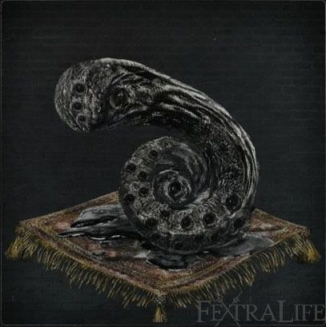

One Third of Umbilical Cord |
||||
|---|---|---|---|---|
|  | ||||
|
||||
Third Umbilical Cord is a Consumable Item in Bloodborne.
One Third of Umbilical Cord Descriptions
Mergo's Cord: "Every Great One loses its child, and then yearns for a surrogate. This Cord granted Mensis audience with Mergo, but resulted in the stillbirth of their brains."
Workshop's Cord: "Every Great One loses its child, and then yearns for a surrogate. The Third Umbilical Cord precipitated the encounter with the pale moon, which beckoned the hunters and conceived the hunter's dream."
Arianna's Cord: "Every Great One loses its child, and then yearns for a surrogate, and Oedon, the formless Great One, is no different. To think, it was corrupted blood that began this eldritch liaison."
Iosefka's Cord: "Provost Willem sought the Cord in order to elevate his being and thoughts to those of a Great One, by lining his brain with eyes. The only choice, he knew, if man were to ever match Their greatness."
MASSIVE SPOILER WARNING IF YOU READ ANY FURTHER
Third Umbilical Cord Usage
- Can be used to access the third ending in the game, consuming 3 Cords before the fight against Gehrman, The First Hunter or at least before he dies, and unlock the fight against Moon Presence.
- Increases your Insight by 3 when consumed.
Location
- 1. After killing Mergo's Wet Nurse.
- 2. Can be found in the Abandoned Old Workshop.
- 3. Killing the baby Arianna gives birth to in Tomb of Oedon sewers or killing her at Iosefka Clinic if you brought her there (after killing Micolash, Host of the Nightmare). (Missable)
- 4. Dropped by Iosefka in her clinic in 1st Floor Sick Room through the entrance from the Forbidden Woods once Rom, the Vacuous Spider has been defeated, as long as you didn't kill her prior to the boss fight. (Missable)
Notes
- Arianna will only appear in Oedon Chapel if the player sends her there.
- If the player does not interact with Arianna, her shoes can be found dropped from an enemy in Iosefka's Clinic at night time. This suggests that she found her way to the clinic on her own.
- If you visit Iosefka's clinic from the backdoor before fighting Rom, the Vacuous Spider she will turn hostile if you go too far up the stairs. If you kill her at this stage you cannot get her Umbilical Cord, however you can run away from the fight and still get it upon your return after fighting Rom.
- Its possible for the imposer not to spawn, she will however, respawn for the blood moon
Trivia
- In the US versions of the game it is called "One Third of Umbilical Cord".
- In the UK versions it is called a "Third Umbilical Cord".
- There is a note in the second floor of the Lecture building stating simply "Three third cords" being the sole allusion to how to unlock the secret ending.
- Named 3本目のへその緒 in the Japanese version, literally meaning "Third Umbilical Cord".
- Named "Terzo Cordone Ombelicale" in Italian version, literally meaning "Third Umbelical Cord"
- In the original 1.0 version of the game as well as the original printing of the future press guide the description of the abandoned workshop umbilical cord says "One of the heirlooms used to contact the Great Ones, originating in the child of the Vilebloods. Long ago, in an encounter with the Great Ones, a contract was established, establishing the hunters and the hunters dream" . Another small addition is that each cord has " Keep one to fend off foul spirits, or use it to obtain great Insight".
 Anonymous
AnonymousIs it possible to use these too early? Every wiki says to use them before the Gehrman fight, but they don’t say it has to be immediately before the fight. Can I simply use them as I pick them up, or do I have to carry them around until I get to the boss room?
- Anonymous
Anyone have an Umbilical Cord to spare? For some reason the nun killed the whore and I killed Iosefka because she attacked me when I entered her clinic for the first time
- Anonymous
Lightly roasted and refined with a pinch of rosemary, these things taste really good.
- Anonymous
- Anonymous
Had no idea you could bing people to oden chapel until after rom so missee that cord and didint know that the lady at the clinic was hostle before you killed rom and killed her two because i didint know she droped a cord so there goes getting the burial blade in ng.
- Anonymous
Beneath the lighthouse hut in the Fishing Hamlet, just before Orphan of Kos, there are giant snail shells embedded in the walls, floor, and ceiling. However, unlike the shells of the snail women, these have prolonged segments that give them an appearance unusually similar to the Third Umbilicals.
By the way, the depression at the center of a gastropod/cephalopod's whorled shell is also called the "umbilicus."
- Anonymous
Just finished the Forbidden Woods and have one so far. Can I use/consume them as I acquire them or do I need to wait until a specific point?
- Anonymous
SERIOUSLY, nobody has commented on the fact that it says in the description for the umbilical cord that this is a "precursor to the umbilical cord..." There is a theory floating around that the great ones created the Pthumerians and the Pthumerians are the precursor to the human race. This theory would actually fit into old-school Lovecraftian lore; The great ones created us almost as an experiment and when we turned out to be weak AF they abandoned us and we became something of a joke. However, in the Bloodborne series, instead of them abandoning us, we started butchering them and experimenting with them, which is why they "closed the gate" so to say. The ones that were left behind were cursed to share a planet with us until we hunted them all to death. The main point I am making here is that it says it is the "precursor to the umbilical cord," hinting that we are some form of descendant of the great ones.
- Anonymous
British and Australian versions they’re just called ‘third umbilical cord’. Kinda funny when you have 3 of the third umbilical cord rather than 3 thirds
- Anonymous
Dumpster diving in the alley behind Planned Parenthood in search for cosmic knowledge.
- Anonymous
Iosefka does not spawn at night if you attack the door. She tells you to f* off basically and only appears again during Blood Moon.
- Anonymous
I collected 3 of them in my ng+ run and didt use it but moon precence ending triggered. I couldnt get my 3. Endng ***** : /
- Anonymous
- Anonymous
has anyone tried proposing to Arianna before blood moon? like go thru cainhurst and use kneel emote on Arianna before speaking
- Anonymous
- Anonymous
How can you tell how many umbilical cords you've eaten thus far?
- Anonymous
I doubt it's the "true ending". If something like this even exists. The special unique secret ending in DS3 is the Dark Lord ending (Londor wins!). The formula "hard to obtain means true ending" doesn't work in the Soulsborne series.
- Anonymous
That massive spoiler warning should be a bit more... massive. I didn't even notice it until after the fact.
- Anonymous
Phony Iosefka is still hostile after fighting Rom. Blood moon makes her not-hostile, I think. Just wanna be specific for accuracy's sake.
- Anonymous
As a lore note, getting 'eyes on the inside' may be interpreted as being able to achieve lucidity or 'control' over one's dreams. In lucid dreams, you are able to interact with the dreamworld as if it were real life. It would be like living in your own fantasy, shaped by your own imagination. U can even bring and communicate with real life people in your dream. Obviously one can only dream when one is sleeping (or more importantly, when one's outer eyes are closed). So i think that the game defines 'dreaming' as observing pictures INSIDE the brain with eyes on the INSIDE. Great Ones may have a powerful version of this ability which allows them not only to observe different planes, but also create new dimensions by just 'dreaming' about them - perhaps Mensis for the Nightmare of Mensis, Kos for Hunter's Nightmare, and (speculation) Moon Presence for Hunter's Dream and Yharnam. Perhaps their ability to induce lucidity in dreams is so powerful that they can actually transfer the conscious of people in the waking world to their dreams. People with lesser minds would not be able to tell the difference. People with higher insight may realize that what they they see is actually what they are being made to see (cite Rom, noted as hiding 'all sorts of secrets'. On a separate line, the description of Blacksky Eye hints that some form of the cosmos exists and can be accessed from inside the eye. While an eye cannot see unto itself, an eye on the 'inside' could actually communicate with the cosmos (and by extension, the Great Ones). But perhaps this requires the blessing or aid of a phantasm, creatures known to act as a conduit to the Cosmos. Or perhaps 'using' third umbilical cords provides this 'in-sight', which may explain how Laurence and Gehrman may have contacted Moon Presence (possibly in the abandoned workshop?). But we know third cords are exceedingly rare, found only when a woman is impregnated by a child of the Great Ones - an event known to occur only during Blood Moons. The major problem, however, is that School of Mensis used hexagonal cages on thier heads to somehow telephone the Great Ones. This doesn't seem to require eyes at all and is more related to brains. So I've no idea what that's about.
- Anonymous
So one cord came from Mergo, the second from Arianna’s child, a third is found on (or in?) Imposter Iosefka as if she was in the final stages of pregnancy, and the last is found without an owner in the Abandoned Workshop. I wonder if this one was collected from the Orphan of Kos, considering it doesn’t drop an umbilical, and Gehrman and the hunters obviously have a deep connection to the Orphan? I guess this is what drew the attention of the “pale moon,” perhaps indirectly, which could explain the “curse of blood” laid upon the hunters by the residents of the Fishing Hamlet. Perhaps the Moon Presence is the very curse itself, along with the bloodlust it represents.
- Anonymous
Maybe one third of umbilical cord is correct cause if we want the secret ending we need to eat 3 umbilical cord
- Anonymous
"In the UK versions of the game it is called "One Third of Umbilical Cord".
In the US versions it is called a "Third Umbilical Cord.""
I think these gotta be switched, dude or someone I don't really know who to talk to about this.
- Anonymous
US and UK version are the same and have always said One third of Umbilical Cord.
I am going back and forth between patched and unpatched and it says the same thing either way. I have US version
- Anonymous
Strangely, as of this posting, the Canadian version of the game (having French printed on the back cover) still lists the item as "One Third of Umbilical Cord." Not sure if it's a regional thing, or even why the Canada/US versions would be any different or patched differently, but yeah it's still got the old(?) name for it.
- Anonymous
they changed the item name to Third Umbilical Cord in the UK version recently
go and check
- Anonymous
clearly its the alien baby from alien hinting at from's sci fi game in dev
- Anonymous
I'm guessing the name is hinting that it isn't "one third of" an umbilical, but that it's "a third umbilical," probably related to the concept of the third eye. The optic nerves could be thought of as a sort of umbilical, connecting our eyes to our brain, so perhaps a "third umbilical" would allow us to attach more eyes.
I noticed a while back that the Third Umbilical Cords look an awful lot like some hidden snail shells found in the caves below the Fishing Hamlet. Some of them feature an elongated "tail," and they appear to have holes or lumps all over them, similar to the eye-like growths on the Third Umbilical Cords. They're found just next to the elevator that descends from the Lighthouse Hut, one of them in the water, and another one lodged in the ceiling. Maybe I'm just seeing things, though...
Still, the shells of the Snail Women look remarkably similar to the fossils of a prehistoric gastropod called "Kosmoceros," albeit much, much larger, which is pretty neat.
- Anonymous
Silly question but for the sake of argument, Say I consume the cords as soon as I got them, would I still get the secret ending? You can get the cord from the Abandoned Workshop at any time but the rest can only been obtained after killing Rom.
- Anonymous
What do I do if I kill the one in the clinic too early and I get the one in the chapel killed by the beast?
This sounds dumb but whatever, im seriously asking this question:Has anyone tried eating all 4 cords? Does it kill you? Do you get the same (best) ending as eating only 3?
- Anonymous
I sent Arianna to the Oedon Chapel and something killed here there during purple sky phase, so no cord from her. If you really want third part of the cord you better send her to the clinic and try to avoid Iosefka before purple sky(before killing Rom). Looks like the easiest and best way to do it. Also has anyone checked, will she survive in chapel if send only her there and rest of NPS into the clinic?
- Anonymous
the item is called "third umbilical cord" not "one third umbilical cord"
- Anonymous
Don't know if this is helpful but I started the fight with Gehrman before using the 3 cords, lost to him, then went and got them and used them and beat Gehrman and still got the secret boss to spawn. Apparently as long as you've done it before you beat him, it's ok.
- Anonymous
On this wiki's article for NG+, it says that you should make sure to collect them all before starting a NG+. Does anyone know what they mean by this? Do they not respawn in a second/third/etc. playthrough?
Just to clarify, topic really. So long as I 'consume' them before the final boss with gherman I get a secret boss?
With as few spoilers as possible, can someone give me specifics? Is it a good ending, a bad one...? If I read ahead I'll probably not even bother finishing the game.
- Anonymous
dose Iosefka drop the cord even if Arianna is not their. i waited to long and Arianna is no longer around. did i F up?
Got all 3 and klilled the Secret Final Boss. No 1 drops from the Nurse No 2 is in the Old Workshop in the Upper Cathedral No 3 Drops the NPC Woman in the Isefaks Clinic/Hospital
- Anonymous
I'm seeing four locations. I just killed Iosefka in the way that does NOT lead to getting one of the cords. Does that mean I could get the other three listed and still unlock the fight?
- Anonymous
Do you have to fight Gehrman to access the Moon Presence boss fight?
- Anonymous
I suppose we all know the jump over that fence you can do to to skip Gascoigne and Amelia. Well, if you do this and enter the Clinic, you'll find real Iosefka behind the usual door, and Imposter Iosefka on the table where you find here to get the chord. She is not agressive, and does not show any health bar when you hit her, but if you persist, she will die and drop the Third Umbilical Cord.
- Anonymous
If I die at the end against gerhman but consumed the cords will they respawn or have I just lost the secret ending
- Anonymous
Sorry if the question is a little confusing... Basically, on my first playthrough, I consumed all 3 of the cords and fought the true boss... What I want to know is once I start a NG+, will the character still have all of them consumed (meaning I won't be able to get all the other ending trophies with this character) or will they reset and I'd have to collect them again?
- Anonymous
- Anonymous
I killed Rom after killing Iosefka...I don't remember getting any loot out of her corpse.
- Anonymous
If you have killed Arianna before defeating the Micolash, you dont get the cord. And as I did not kill Iosefka after Rom, Im screwed. Always send her to the ward
- Anonymous
So I ate one when I found it in the source of the hunters dream. Does that count at the end?
- Anonymous
- Anonymous
can i eat them at any time, or do i have to eat em right before defeating gehrman? if so, should i die, would i lose the chance to get the true ending?
- Anonymous
why is it called one third on this wiki page, there are 4 cords lol. i consumed 4 of them in my first playtrough
- Anonymous
Don't murder every NPC for looking at you twice. (seriously though, be sure to read everything to ensure you get at least 3)
- Anonymous
Seriously? Using Google Translate for Japanese? Literal autism.
- Anonymous
Arianna got killed by bandaged man, and I killed Iosefka before orange moon. Wtf. This game totally blind-sided me. Am I screwed??
- Anonymous
If I eat 2 cords in reg game and go into new game plus and eat one will I get the secret ending
- Anonymous
Is it possible to dupe a save and transfer cords between characters?
- Anonymous
I think the UK translation is probably the more accurate one, as a note in the Lecture Building "Three Third Cords" is the hint the game gives for consuming the cords. Combined with the description of the Abandoned Workshop cord, this would seem to make the UK translation correct.
- Anonymous
- Anonymous
If you used the umbilical cords fought gehrman and died then leave hunter's dream to lvl up more do you still get the secret boss?
- Anonymous
It's called "One Third of Umbilical Cord" because three is required to get the true ending. "Third Umbilical Cord" makes less sense because of the four, only one can be the third. This naming scheme would require a First, Second, and Fourth Umbilical Cord items.
- Anonymous
- Anonymous
If I already choose "refuse" and I already die once for Gehrman I still can do the true end or just in NG+??
- Anonymous
Hello. I'm not sure how relevant this is but the in the original 1.0 version of the game and in the full press guide. the description of the abandoned workshop umbilical cord is different. In the guide is says "One of the heirlooms used to contact the Great Ones, originating in the Vilebloods. Long ago, in an encounter with the Great Ones, a contract was established, establishing the hunters and the Hunter's Dream." they also include the phrase "Every Great One has this precursor to the Umbilical Cord. Keep one to fend off foul spirits , or use to gain obtain great insight."Sorry if someone in the comments already pointed his out but I thought maybe this information should be in the article.
- Anonymous
I never read that as "third" meaning that three are needed to form one complete cord. I have an EU version of the game so the game itself never hinted that meaning anyway. The note in the Lecture Building reads "Three Third Cords", which is different than saying "Three Thirds of Cord". So what I have come up undertanding is that, maybe, the newborn Great Ones have three umbilical cords each and only the third can be used to gain Insight.
- Anonymous
Has anyone tried consuming 3 cords at the earliest opportunity?If I'm not mistaken it should be possible before mergo's wet nurse. did anyone notice any differences to the game at any point of time?
- Anonymous
There is a message in the Lecture Building that only says "Three third cords". It is a hint that there are and you will need multiple cords. Calling it "One third of" renders this message absolutely useless, since the name immediately gives away that there are multple cords for you to find.
- Anonymous
- Anonymous
what if i use all 3 when i get them do it change something? do i still get the moon presence boss? or i abselutly need to use them in frond of gehrman boss fight gate?
- Anonymous
You can only have 1 of these? I dont understand this. I think I found one in old abandoned workshop. And I looted one from Ariannas baby. But I only have one.
- Anonymous
I killed Iosefka before Rom and now I realize I made a mistake. I thought I have the chord after I killed her as a hostile before killing Rom. Also, Arianna and her baby aren't even in the sewer after killing Wet Nurse. The 3rd and 4th chords are nowhere to be found! What can I do?
- Anonymous
- Anonymous
If I used 3 corded before ng+ does that mean I unlock the moon presence in new ng+ without consuming another 3?
- Anonymous
Was following a guide for how to get all items on Forbidden woods and then I accidentally met him, didn't even kill Iosefka or fight him so am i still going to miss that cord?
- Anonymous
have 4 umbilical cord... there's something strange for me.... the description of one of them is different from the other three and mention Master Willem.... means nothing for you? and also in Byrgenwerth, inside the house right of the entrance door there's a closed manhole...
- Anonymous
It might be noteworthy to mention that the items don't stack like other consumable items. In addition, the chords from different sources actually have slightly different item descriptions.
- Anonymous
Alright, I admit it I was completely lost in this game and didn't understand how to play its story in proper way. I'm almost beating the game for the first time. I got the One Third of Umbilical Cord from Abandoned Workshop and the Wet Nurse. I accidentally killed the woman in the Cathedral Ward so I didn't get the option to send Arianna to Cathedral Ward. Also I killed Iosefka before killing Rom. I know I messed up the whole progress of the game, but is there any chance to get the third piece of Umbilical Cord from Arianna? Please I need your help guys ..::*_*::..
- Anonymous
I demand that you add to the Arianna umbilical cord bullet point that killing the baby will also kill her
- Anonymous
I don't imagine it does, but does eating all 4 of the umbilical cords change anything?
- Anonymous
Seriously? This is a wiki. There's always spoilers on the wiki. Someone should take this off, and put it on the main page of the game. I'm only reading this cause of someone I followed, posted about Moon Presence being a secret boss. Aside from this, I only re-read up on weapons and possible blood gem locations.
- Anonymous
i fought iosefka early but she kicked by bottomz. so i didnot kill her. does this mean i can ignore her come back after rom and still get the umbilical cord or havr i lost it
- Anonymous
Are you really able to kill her at the Clinic after Micolash dies and still get the cord?
- Anonymous
If I die to Gehrman and then consume all three before next battle, will I be able to unlock the secret ending still?
- Anonymous
The whole consumption timing seems a bit unclear. Provided I have at least three cords on my inventory, of course, consider the following scenario: consuming the cords, then going into battle with Gehrman and dying. Would that invalidate them, thus making it impossible to get the true ending on that playthrough?
- Anonymous
Killed rom, went to iosefkas to get the one third.. Found only emissary and cainhurst summons.... Whaaa?
- Anonymous
so i killed the iosefka to early and forgot to grab arianna, is there anyway i could manipulate the formula of the game to attain another?
Delicious
6
+10
-1